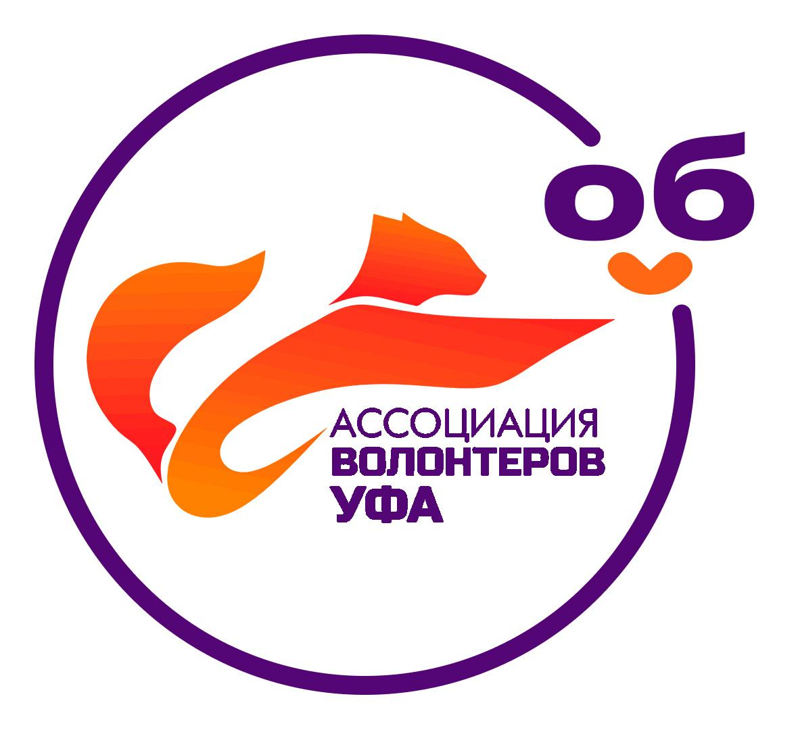

Местная молодежная общественная организация "Ассоциация волонтеров Уфы Республики Башкортостан" начала свою деятельность в 2017 году. После проведения крупных международных мероприятий, проводимых на территории города Уфы (Международные детские игры - 2019 года, ШОС и БРИКС и пр.), показав социальную значимость популяризации добровольчества среди населения столицы Башкирии, в 2021 году получила статус юридического лица. Ассоциация волонтеров Уфы является добровольным объединением граждан, объединившихся в установленном законе порядке на основе общности их интересов для удовлетворения духовных или иных нематериальных потребностей молодых людей в возрасте от 14 до 35 лет. Миссией Ассоциации является развитие добровольчества на территории городского округа город Уфа Республики Башкортостан, распространение ценностей добровольчества и культуры конструктивной гражданской позиции. С сентября 2022 года Ассоциация волонтеров Уфы получила статус ДОБРО. ЦЕНТРА в числе первых 12-ти в России и первые в Республике Башкортостан. В 2022 году ДОБРО.ЦЕНТР Ассоциация волонтеров Уфы занял 1 место в номинации "Социально ориентированная некоммерческая организация, осуществляющая деятельность по развитию добровольчества" Республиканского конкурса "Муниципалитет добрых дел". в 2023 году ДОБРО.ЦЕНТР Ассоциация волонтеров Уфы становилась неоднократным победителем грантовых конкурсов на поддержку и развитие добровольчества среди подростков и молодежи Уфы (Первый Грантовый конкурс Движения Первых, Грант Главы Администрации городского округа города Уфы РБ и пр.). Ассоциация в своей деятельности решает следующие задачи: - популяризация идей добровольчества в молодежной городской среде; - организация и проведение социально-значимых мероприятий: проведение молодёжных акций различной направленности, благоустройство города, благотворительные акции; - налаживание сотрудничества с социальными и коммерческими партнерами для совместной социально-значимой деятельности; - реализация местных волонтерских (добровольческих) проектов; - создание площадки для взаимодействия волонтерских (добровольческих) организаций и прочее. Команда ДОБРО.ЦЕНТР Ассоциация волонтеров Уфы имеет богатый опыт по реализации различных сервисов (обучение социальному проектированию, подготовка и обучение волонтерского корпуса крупных мероприятий, организация донорских акций, экологических и иных акций, реализация проекта "Обучение служением", развитие корпоративного волонтерства и пр.). В 2024 году Добро.Центр Уфы впервые стали главным притяжением волонтеров на Фестиваль VK Fest 2024!
